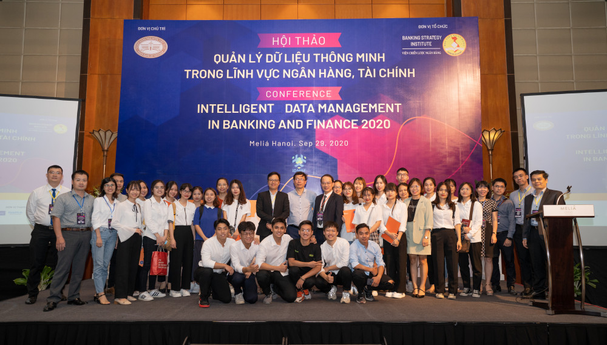

Trang chủ | Giới thiệu | Tin tức | Liên hệ | Quản trị
Theo kế hoạch tuyển sinh năm 2024, Học viện Ngân hàng có 5 phương thức xét tuyển, trong đó lần đầu tiên trường có phương thức mới là xét điểm thi V-SAT.
Sáng 03/05/2024, Học viện Ngân hàng tổ chức “Hội chợ việc làm - Cầu nối nhân lực 2024” với sự tham gia đông đảo của các ngân hàng, doanh nghiệp đăng kí tuyển dụng và hàng nghìn sinh viên tham dự.
